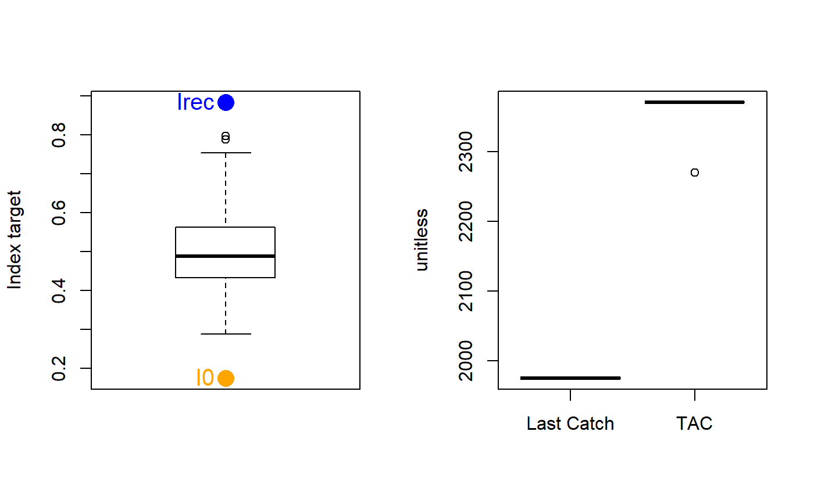

GB_target.RdAn MP similar to SBT2 that modifies a time-series of catch recommendations and aims for target catch rate and catch level based on BMSY/B0 and MSY, respectively.
GB_target(x, Data, reps = 100, plot = FALSE, w = 0.5)
| x | A position in a data-limited methods data object |
|---|---|
| Data | A data-limited methods data object |
| reps | The number of stochastic samples of the MP recommendation(s) |
| plot | Logical. Show the plot? |
| w | A gain parameter |
An object of class Rec with the TAC slot populated with a numeric vector of length reps
The TAC is calculated as: If \(I_\textrm{recent} \geq I_0\): $$\textrm{TAC}= C_\textrm{ref} \left(w + (1-w)\frac{I_\textrm{rec}-I_0}{I_\textrm{target}-I_0} \right) $$
else: $$\textrm{TAC}= wC_\textrm{ref} \frac{I_\textrm{rec}}{I_0}^2$$
where \(C_\textrm{ref}\) is a reference catch assumed to be a proxy for MSY (Data@Cref),
w is a gain parameter,
\(I_\textrm{rec}\) is the average index over the last 4 years,
\(I_\textrm{target}\) is the target Index (Data@Iref), and
\(I_0\) is 0.2 x the average index ver the past 5 years.
In the MSE \(C_\textrm{ref}\) is the calculated MSY subject to observation error
defined in Obs@CV_Cref, and \(I_\textrm{target}\) is assumed to be the index at MSY subject
to observation error (Obs@CV_Iref). Consequently, the performance of this method in the MSE
is strongly determined by the specified uncertainty for these parameters.
The TAC is subject to the following conditions:
if next TAC > 1.2 last catch, then TAC = 1.2 last catch
if next TAC < 0.8 last catch, then TAC = 0.8 last catch
See Data for information on the Data object
GB_target: Cat, Cref, Ind, Iref
See Online Documentation for correctly rendered equations
Geromont, H.F. and Butterworth, D.S. 2014. Complex assessment or simple management procedures for efficient fisheries management: a comparative study. ICES J. Mar. Sci. doi:10.1093/icesjms/fsu017
GB_target(1, DLMtool::SimulatedData, plot=TRUE)#> TAC (median) #> 2469.455